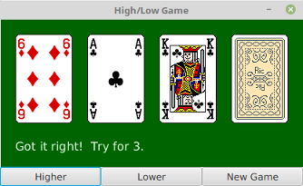
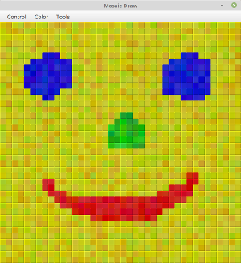

Complete Programs
In this chapter, we have covered many of the basic aspects of GUI programming. There is still a lot more to learn, and we will return to the topic in Chapter 13. But you already know enough to write some interesting programs. In this section, we look at two complete programs that use what you have learned about GUI programming in this chapter, as well as what you learned about programming in general in earlier chapters. Along the way, we will also encounter a few new ideas.
A Little Card Game
The first program that we will consider is a GUI version of the command-line card game HighLow.java from Subsection 5.4.3. In the new version, HighLowGUI.java, you look at a playing card and try to predict whether the next card will be higher or lower in value. (Aces have the lowest value in this game.) In this GUI version of the program, you click on a button to make your prediction. If you predict wrong, you lose. If you make three correct predictions, you win. After completing a game, you can click "New Game" to start another game. Here is what the program looks like in the middle of a game:

The complete source code for the program can be found in the file HighLowGUI.java. I encourage you to compile and run it. Note that the program also requires Card.java, Deck.java, and Hand.java, from Section 5.4, since they define classes that are used in the program. And it requires the file of card images, cards.png, that was used in RandomCards.java from Subsection 6.2.4.
{kind=link}
The layout of the program should be easy to guess: HighLowGUI uses a BorderPane as the root of the scene graph. The center position is occupied by a Canvas on which the cards and a message are drawn. The bottom position contains an HBox that in turn contains three Buttons. In order to make the buttons fill the HBox, I set them all to have the same width, as discussed in Subsection 6.5.3. You can see all this in the start() method from the program:
public void start(Stage stage) {
cardImages = new Image("cards.png"); // Load card images.
board = new Canvas(4*99 + 20, 123 + 80); // Space for 4 cards.
Button higher = new Button("Higher"); // Create the buttons, and
higher.setOnAction( e -> doHigher() ); // install event handlers.
Button lower = new Button("Lower");
lower.setOnAction( e -> doLower() );
Button newGame = new Button("New Game");
newGame.setOnAction( e -> doNewGame() );
HBox buttonBar = new HBox( higher, lower, newGame );
higher.setPrefWidth(board.getWidth()/3.0); // Make each button fill
lower.setPrefWidth(board.getWidth()/3.0); // 1/3 of the width.
newGame.setPrefWidth(board.getWidth()/3.0);
BorderPane root = new BorderPane(); // Create the scene graph root node.
root.setCenter(board);
root.setBottom(buttonBar);
doNewGame(); // set up for the first game
Scene scene = new Scene(root); // Finish setting up the scene and stage.
stage.setScene(scene);
stage.setTitle("High/Low Game");
stage.setResizable(false);
stage.show();
} // end start()Note that the event handlers call methods such as doNewGame() that are defined elsewhere in the program. The programming of those methods is a nice example of thinking in terms of a state machine. (See Subsection 6.3.6.) It is important to think in terms of the states that the game can be in, how the state can change, and how the response to events can depend on the state. The approach that produced the original, text-oriented game in Subsection 5.4.3 is not appropriate here. Trying to think about the game in terms of a process that goes step-by-step from beginning to end is more likely to confuse you than to help you.
The state of the game includes the cards and the message. The cards are stored in an object of type Hand. The message is a String. These values are stored in instance variables. There is also another, less obvious aspect of the state: Sometimes a game is in progress, and the user is supposed to make a prediction about the next card. Sometimes we are between games, and the user is supposed to click the "New Game" button. It's a good idea to keep track of this basic difference in state. The program uses a boolean instance variable named gameInProgress for this purpose.
The state of the game can change whenever the user clicks on a button. The program has three methods to respond to button clicks: doHigher(), doLower(), and newGame(). It's in these three event-handling methods that the action of the game takes place.
We don't want to let the user start a new game if a game is currently in progress. That would be cheating. So, the response in the newGame() method is different depending on whether the state variable gameInProgress is true or false. If a game is in progress, the message instance variable should be set to be an error message. If a game is not in progress, then all the state variables should be set to appropriate values for the beginning of a new game. In any case, the board must be redrawn so that the user can see that the state has changed. The complete newGame() method is as follows:
/**
* Called by the start() method, and called by an event handler if
* the user clicks the "New Game" button. Start a new game.
*/
private void doNewGame() {
if (gameInProgress) {
// If the current game is not over, it is an error to try
// to start a new game.
message = "You still have to finish this game!";
drawBoard();
return;
}
deck = new Deck(); // Create the deck and hand to use for this game.
hand = new Hand();
deck.shuffle();
hand.addCard( deck.dealCard() ); // Deal the first card into the hand.
message = "Is the next card higher or lower?";
gameInProgress = true;
drawBoard();
} // end doNewGame()The doHigher() and doLower() methods are almost identical to each other (and could probably have been combined into one method with a parameter, if I were more clever). Let's look at the doHigher() routine. This is called when the user clicks the "Higher" button. This only makes sense if a game is in progress, so the first thing doHigher() should do is check the value of the state variable gameInProgress. If the value is false, then doHigher() should just set up an error message. If a game is in progress, a new card should be added to the hand and the user's prediction should be tested. The user might win or lose at this time. If so, the value of the state variable gameInProgress must be set to false because the game is over. In any case, the board is redrawn to show the new state. Here is the doHigher() method:
/**
* Called by an event handler when user clicks "Higher" button.
* Check the user's prediction. Game ends if user guessed
* wrong or if the user has made three correct predictions.
*/
private void doHigher() {
if (gameInProgress == false) {
// If the game has ended, it was an error to click "Higher",
// So set up an error message and abort processing.
message = "Click \"New Game\" to start a new game!";
drawBoard();
return;
}
hand.addCard( deck.dealCard() ); // Deal a card to the hand.
int cardCt = hand.getCardCount();
Card thisCard = hand.getCard( cardCt - 1 ); // Card just dealt.
Card prevCard = hand.getCard( cardCt - 2 ); // The previous card.
if ( thisCard.getValue() < prevCard.getValue() ) {
gameInProgress = false;
message = "Too bad! You lose.";
}
else if ( thisCard.getValue() == prevCard.getValue() ) {
gameInProgress = false;
message = "Too bad! You lose on ties.";
}
else if ( cardCt == 4) {
gameInProgress = false;
message = "You win! You made three correct guesses.";
}
else {
message = "Got it right! Try for " + cardCt + ".";
}
drawBoard();
} // end doHigher()The drawBoard() method, which is responsible for drawing the content of the canvas, uses the values in the state variables to decide what to show. It displays the string stored in the message variable. It draws each of the cards in the hand. There is one little tricky bit: If a game is in progress, it draws an extra face-down card, which is not in the hand, to represent the next card in the deck. The technique for drawing the individual cards was explained in Section 6.2. See the source code for the method definition.
Menus and Menubars
Our second example program, "MosaicDraw," is a kind of drawing program. The source code for the program is in the file MosaicDraw.java. The program also requires MosaicCanvas.java. Here is a half-size screenshot showing a sample drawing made with the program:

As the user clicks-and-drags the mouse in the large drawing area of this program, it leaves a trail of little colored squares. There is some random variation in the color of the squares. (This is meant to make the picture look a little more like a real mosaic, which is a picture made out of small colored stones in which there would be some natural color variation.) The program has one feature that we have not encountered before: There is a menu bar above the drawing area. The "Control" menu contains commands for filling and clearing the drawing area, along with a few options that affect the appearance of the picture. The "Color" menu lets the user select the color that will be used when the user draws. The "Tools" menu affects the behavior of the mouse. Using the default "Draw" tool, the mouse leaves a trail of single squares. Using the "Draw 3x3" tool, the mouse leaves a swatch of colored squares that is three squares wide. There are also "Erase" tools, which let the user set squares back to their default black color.
The drawing area of the program is a panel that belongs to the MosaicCanvas class, a subclass of Canvas that is defined in MosaicCanvas.java. MosaicCanvas is a highly reusable class for representing mosaics of colored rectangles. It was also used behind the scenes in the sample program in Subsection 4.7.3. The MosaicCanvas class does not directly support drawing on the mosaic, but it does support setting the color of each individual square. The MosaicDraw program installs mouse handlers on the canvas. The handlers respond to MousePressed and MouseDragged events on the canvas by applying the currently selected tool to the canvas at the square that contains the mouse position. This is a nice example of applying event listeners to an object to do something that was not programmed into the object itself.
I urge you to study MosaicDraw.java. I will not be discussing all aspects of the code here, but you should be able to understand it all after reading this section. As for MosaicCanvas.java, it uses some techniques that you would not understand at this point, but I encourage you to at least read the comments in that file to learn about the API for MosaicCanvas.
MosaicDraw is the first example that we have seen that uses a menu bar. Fortunately, menus are very easy to use in JavaFX. The items in a menu are represented by objects belonging to class MenuItem or to one of its subclasses. (MenuItem and other menu-related classes are in package javafx.scene.control.) Menu items are used in almost exactly the same way as buttons. In particular, a MenuItem can be created using a constructor that specifies the text of the menu item, such as:
MenuItem fillCommand = new MenuItem("Fill");Menu items, like buttons, can have a graphic as well as text, and there is a second constructor that allows you to specify both text and graphic. When the user selects a MenuItem from a menu, an ActionEvent is generated. Just as for a button, you can add an action event listener to the menu item using its setOnAction(handler) method. A menu item has a setDisable(disabled) method that can be used to enable and disable the item. And it has a setText() method for changing the text that is displayed in the item.
The main difference between a menu item and a button, of course, is that a menu item is meant to appear in a menu. (Actually, a menu item is a Node that can appear anywhere in a scene graph, but the usual place for it is in a menu.) A menu in JavaFX is represented by the class Menu. (In fact, Menu is actually a subclass of MenuItem, which means that you can add a menu as an item in another menu. The menu that you add becomes a submenu of the menu that you add it to.) A Menu has a name, which is specified in the constructor. It has an instance method getItems() that returns a list of menu items contained in the menu. To add items to the menu, you need to add them to that list:
Menu sampleMenu = new Menu("Sample");
sampleMenu.getItems().add( menuItem ); // Add one menu item to the menu.
sampleMenu.getItems().addAll( item1, item2, item3 ); // Add multiple items.Once a menu has been created, it can be added to a menu bar. A menu bar is represented by the class MenuBar. A menu bar is just a container for menus. It does not have a name. The MenuBar constructor can be called with no parameters, or it can have a parameter list containing Menus to be added to the menu bar. The instance method getMenus() returns a list of menus, with methods add() and addAll() for adding menus to the menu bar. For example, the MosaicDraw program uses three menus, controlMenu, colorMenu, and toolMenu. We could create a menu bar and add the menus to it with the statements:
MenuBar menuBar = new MenuBar();
menuBar.getMenus().addAll(controlMenu, colorMenu, toolMenu);Or we could list the menus in the menu bar constructor:
MenuBar menuBar = new MenuBar(controlMenu, colorMenu, toolMenu);The final step in using menus is to add the menu bar to the program's scene graph. The menu bar could actually appear anywhere, but typically, it should be at the top of the window. A program that has a menu bar will usually use a BorderPane as the root of its scene graph, and it will add the menu bar as the top component in that root pane. The rest of the GUI for the program can be placed in the other four positions of the border pane.
So using menus generally follows the same pattern: Create a menu bar. Create menus and add them to the menu bar. Create menu items and add them to the menus (and set up listening to handle action events from the menu items). Place the menu bar at the top of a BorderPane, which is the root of the scene graph.
There are other kinds of menu items, defined by subclasses of MenuItem, that can be added to menus. A very simple example is SeparatorMenuItem, which appears in a menu as a line between other menu items. You can see an example in the "Control" menu of MosaicDraw. To add a separator to a Menu, menu, you just need to say
menu.getItems().add( new SeparatorMenuItem() );Much more interesting are the subclasses CheckMenuItem and RadioMenuItem.
A CheckMenuItem represents a menu item that can be in one of two states, selected or not selected. The state is changed when the user selects the item from the menu that contains it. A CheckMenuItem has the same functionality and is used in the same way as a CheckBox (see Subsection 6.4.3). Three CheckMenuItems are used in the "Control" menu of the MosaicDraw program. One is used to turn the random color variation of the squares on and off. Another turns a symmetry feature on and off; when symmetry is turned on, the user's drawing is reflected horizontally and vertically to produce a symmetric pattern. And the third CheckMenuItem shows and hides "grouting" in the mosaic (grouting consists of gray lines drawn around each of the little squares in the mosaic). The CheckMenuItem that corresponds to the "Use Randomness" option in the "Control" menu could be set up with the statements:
useRandomness = new CheckMenuItem("Use Randomness");
useRandomness.setSelected(true); // Randomness is initially turned on.
controlMenu.getMenus().add(useRandomness); // Add menu item to the menu.No ActionEvent handler is added to useRandomness; the program simply checks its state by calling useRandomness.isSelected() whenever it is coloring a square, to decide whether to add some random variation to the color. On the other hand, when the user selects the "Use Grouting" check box from the menu, the canvas must immediately be redrawn to reflect the new state. A handler is added to the CheckMenuItem to take care of that by calling an appropriate method:
useGrouting.setOnAction( e -> doUseGrouting(useGrouting.isSelected()) );The "Color" and "Tools" menus contain items of type RadioMenuItem, which are used in the same way as the RadioButtons that were discussed in Subsection 6.4.3: A RadioMenuItem, like a check box, can be either selected or unselected, but when several RadioMenuItems are added to a ToggleGroup, then at most one of the group members can be selected. In the program, the user selects the tool that they want to use from the "Tools" menu. Only one tool can be selected at a time, so it makes sense to use RadioMenuItems to represent the available tools, and to put all of those items into the same ToggleGroup. The currently selected option in the "Tools" menu will be marked as selected; when the user chooses a new tool, the mark is moved. This gives the user some visible feedback about which tool is currently selected for use. Furthermore, the ToggleGroup has an observable property representing the currently selected option (see Subsection 6.3.7). The program adds a listener to that property with an event handler that will be called whenever the user selects a new tool. Here is the code that creates the "Tools" menu:
Menu toolMenu = new Menu("Tools");
ToggleGroup toolGroup = new ToggleGroup();
toolGroup.selectedToggleProperty().addListener(
e -> doToolChoice(toolGroup.getSelectedToggle()) );
addRadioMenuItem(toolMenu,"Draw",toolGroup, true);
addRadioMenuItem(toolMenu,"Erase",toolGroup, false);
addRadioMenuItem(toolMenu,"Draw 3x3",toolGroup, false);
addRadioMenuItem(toolMenu,"Erase 3x3",toolGroup, false);The addRadioMenuItem method that is used in this code is a utility method that is defined elsewhere in the program:
/**
* Utility method to create a radio menu item, add it
* to a ToggleGroup, and add it to a menu.
*/
private void addRadioMenuItem(Menu menu, String command,
ToggleGroup group, boolean selected) {
RadioMenuItem menuItem = new RadioMenuItem(command);
menuItem.setToggleGroup(group);
menu.getItems().add(menuItem);
if (selected) {
menuItem.setSelected(true);
}
}The complete code for creating the menu bar in MosaicDraw can be found in a method createMenuBar(). Again, I encourage you to study the source code.
Scene and Stage
Before ending this brief introduction to GUI programming, we look at two fundamental classes in a little more detail: Scene, from package javafx.scene, and Stage, from package javafx.stage.
A Scene represents the content area of a window (that is, not including the window's border and title bar), and it serves as a holder for the root of the scene graph. The Scene class has several constructors, but they all require the root of the scene graph as one of the parameters, and the root cannot be null. Perhaps the most common constructor is the one that has only the root as parameter: new Scene(root).
A scene has a width and a height, which can be specified as parameters to the constructor: new Scene(root,width,height). In the typical case where the root is a Pane, the size of the pane will be set to match the size of the scene, and the pane will lay out its contents based on that size. If the size of the scene is not specified in the constructor, then the size of the scene will be set to the preferred size of the pane. It is not possible for a program to set the width or height of a Scene after it has been created, but if the size of the stage that contains a scene is changed, then the size of the scene is automatically changed to match the new size of the stage's content area, and the root node of the scene (if it is a Pane) will be resized as well.
A Scene can have a background fill color (actually a Paint), which can be specified in the constructor. Generally, the scene's background is not seen, since it is covered by the background of the root node. The default style sets the background of the root to be light gray. However, you can set the background color of the root to be transparent if you want to see the scene background instead.
A Stage, from package javafx.stage, represents a window on the computer's screen. Any JavaFX Application has at least one stage, called the primary stage, which is created by the system and passed as a parameter to the application's start() method. Although we have not seen any examples so far in this textbook, many programs use more than one window. It is possible for a program to create new Stage objects; we will see how to do that in Chapter 13.
A stage contains a scene, which fills its content area. The scene is installed in the stage by calling the instance method stage.setScene(scene). It is possible to show a stage that does not contain a scene, but its content area will just be a blank rectangle.
In addition to a content area, a stage has a title bar above the content. The title bar contains a title for the window and some "decorations"—little controls that the user can click to do things like close and maximize the window. The title bar is provided by the operating system, not by Java, and its style is set by the operating system. The instance method stage.setTitle(string) sets the text that is shown in the title bar. The title can be changed at any time.
By default a stage is resizable. That is, the size of the window can be changed by the user, by dragging its borders or corners. To prevent the user from changing the window size, you can call stage.setResizable(false). However, a program can change the size of a stage with the instance methods stage.setWidth(w) and stage.setHeight(h), and this can be done even if the stage has been made non-resizable. Usually, the initial size of a stage is determined by the size of the scene that it contains, but it is also possible to set the initial size before showing the window using setWidth() and setHeight().
By default, when a stage is resizable, the user can make the window arbitrarily small and arbitrarily large. It is possible to put limits on the resizability of a window with the instance methods stage.setMinWidth(w), stage.setMaxWidth(w), stage.setMinHeight(h), and stage.setMaxHeight(h). The size limits apply only to what the user can do by dragging the borders or corners of the window.
It is also possible to change the position of a stage on the screen, using the instance methods stage.setX(x) and stage.setY(y). The x and y coordinates specify the position of the top left corner of the window, in the coordinate system of the screen. Typically, you would do this before showing the stage.
Finally, for now, remember that a stage is not visible on the screen until you show it by calling the instance method stage.show(). Showing the primary stage is typically the last thing that you do in a application's start() method.
Creating Jar Files
Java classes and resource files are often distributed in jar ("java archive") files. For a program that consists of multiple files, it can make sense to pack them into a single jar file. As the last topic for this chapter, we look at how to do that. The program can be run directly from the jar file, without unpacking it. However, for JavaFX programs, the user will still need access to the JavaFX SDK. A jar file can be "executable," meaning that it specifies the class that contains the main() routine that will be run when the jar file is executed. If you have an executable jar file that does not require JavaFX or other external resources, you can run it on the command line using a command of the form:
$ java -jar JarFileName.jarand you might even be able to run the jar file by double-clicking its icon in a file browser window. If an executable jar file requires JavaFX, you will need to add the same options to the java command that were discussed in Subsection 2.6.7. For example,
$ java -p /opt/jfx17/lib --add-modules=ALL-MODULE-PATH JarFileName.jarThe question, then, is how to create a jar file. The answer depends on what programming environment you are using. The two basic types of programming environment—command line and IDE—were discussed in Section 2.6. Any IDE (Integrated Development Environment) for Java should have a command for creating jar files. In the Eclipse IDE, for example, it can be done as follows: In the Package Explorer pane, select the programming project (or just all the individual source and resource files that you want to include). Right-click on the selection, and choose "Export" from the menu that pops up. In the window that appears, select "JAR file" and click "Next". In the window that appears next, enter a full path name for the jar file in the box labeled "JAR file". (Click the "Browse" button next to this box to select the file name using a file dialog box.) The name of the file should end with ".jar". If you are creating a regular jar file, not an executable one, you can hit "Finish" at this point, and the jar file will be created. To create an executable file, hit the "Next" button twice to get to the "Jar Manifest Specification" screen. At the bottom of this screen is an input box labeled "Main class". You have to enter the name of the class that contains the main() routine that will be run when the jar file is executed. If you hit the "Browse" button next to the "Main class" box, you can select the class from a list of classes that contain main() routines. Once you've selected the main class, you can click the "Finish" button to create the executable jar file.
It is also possible to create jar files on the command line. The Java Development Kit includes a command-line program named jar that can be used to create jar files. If all your classes are in the default package (like most of the examples in this book), then the jar command is easy to use. To create a non-executable jar file on the command line, change to the directory that contains the class files that you want to include in the jar. Then give the command
$ jar -c -f JarFileName.jar *.classwhere JarFileName can be any name that you want to use for the jar file. The -c option is used to create a jar file. The -f is followed by the name of the jar file that is to be created. The "*" in "*.class" is a wildcard that makes *.class match every class file in the current directory. This means that all the class files in the directory will be included in the jar file. If you want to include only certain class files, you can name them individually, separated by spaces. You can also list the class file names separately. If the program uses resource files, such as images, they should also be listed in the command. (Things get more complicated if your classes and resources are not in the default package. In that case, the files must be in subdirectories of the directory in which you issue the jar command, and you have to include the path to the file in the name. For example: textio/TextIO.class on MacOS and Linux, or textio\TextIO.class on Windows.)
Making an executable jar file on the command line is only a little more complicated. There has to be some way of specifying which class contains the main() routine. This can be done by adding the -e option to the command, with a value giving the full name of the class that is to be executed when the jar file is run. For example, if the name of the class is MyMainClass, then the jar file could be created with:
$ jar -c -f JarFileName.jar -e MyMainClass *.classFor a program defined in two packages, grapher.ui and grapher.util, with a main class defined in the file Main.java in package grapher.ui, the command would become
$ jar -c -f Grapher.jar -e grapher.ui.Main grapher/ui/*.class grapher/util/*.classexcept that on Windows, the slashes would be replaced by backslashes.
(The options -c, -f, and -e are abbreviations for the longer forms --create, --file, and --main-class, and you can use the longer forms, if you prefer clarity to brevity.)
jpackage
You can collect the class files and resource files for a program into a jar file, and you can give that jar file to someone who would like to use your program. However, that person will still need to have Java installed on their computer—something that is really not very likely these days, unless that person is a Java developer. A possible solution is to bundle a Java virtual machine along with your program. The Java Development Kit includes the jpackage command to make that possible.
The jpackage command can create an installer that will install your program along with as much Java support as is needed to run it. It has some significant limitations. It can only make an installer for the type of computer and operating system that you are using; for example, it is not possible to use jpackage on Linux to make an installer for Windows. And the files that it makes are very large, since they have to include large parts of a Java execution environment. So jpackage is really meant for packaging large, serious applications. But if you want to try it, here is a basic example, using only a few of the options that are available for jpackage. For the example, I made an installer for the network poker game from Subsection 12.5.4. This might also help you understand how to work with packages in general.
To apply jpackage to a program that uses JavaFX, you have to make Java packages available to the jpackage command. For this purpose, you can't use the JavaFX SDK. Instead, you need the JavaFX "jmods". See Subsection 2.6.7 for a discussion of the JavaFX SDK. For jpackage, you will need to download the jmods for your operating system from https://gluonhq.com/products/javafx/. For my computer, I extracted the downloaded file into /opt/javafx-jmods-17.0.2. (The jmods are required because they include specific operating system support that is not in the SDK jar files.)
To use jpackage, you need a jar file that contains the classes and resource files for your program. The poker game uses classes from the packages netgame.common and netgame.fivecarddraw, plus a resource image file cards.png in netgame.fivecarddraw. To make the jar file, I first compiled the Java files for the program. Since the poker game uses JavaFX, I included the necessary options in the javac command. I used the following command in the directory that contained the netgame directory, typed all on one line:
$ javac --module-path /opt/jfx17/lib --add-modules=ALL-MODULE-PATH
netgame/common/*.java netgame/fivecarddraw/*.javaI then created a jar file, Poker.jar, with this command, typed all on one line:
$ jar -c -f Poker.jar netgame/common/*.class netgame/fivecarddraw/*.class
netgame/fivecarddraw/cards.pngIt is important to include the image resource file along with the class files. (Note that on Windows, the slashes, "/", would be replaced by backslashes, "\".)
I moved Poker.jar to a new directory. Working in that new directory, I used the following very long jpackage command, again typed all on one line:
$ jpackage --input . --main-jar Poker.jar
--main-class netgame.fivecarddraw.Main --name NetPoker
--module-path /opt/javafx-jmods-17.0.2
--add-modules javafx.base,javafx.controls,javafx.graphicsThe value for the --input option is a period, which represents the current working directory; it could be replaced by a path to the directory that contains Poker.jar. The value for the --main-class option is the full name of the class that contains the main program; this option is not needed if the jar file is executable. The value of the --name option is used to name the installer and to name the executable file that it will install. The --module-path refers to the directory that contains the JavaFX jmods. And the added modules are just those JavaFX modules that are needed for this program.
When used on my computer, running Linux Mint, this produced a file named netpoker_1.0-1_amd64.deb that I could then install in the usual way. It installed the poker executable as /opt/netpoker/bin/NetPoker.
On MacOS 10.15, using the JDK from adoptium.net (see Subsection 2.6.1), I found that jpackage was installed as part of the JDK, but it was not made available on the command-line. I was able to define it myself as an alias:
$ alias jpackage=
"/Library/Java/JavaVirtualMachines/temurin-17.jdk/Contents/Home/bin/jpackage"Again, type this all on one line. With that done, I used the same commands as given above, with appropriate directory names for the JavaFX SDK and jmods. The result was a .dmg file containing a program, netpoker.app, that could be run by double-clicking. (The jpackage command might be properly set up in newer versions of MacOS.)
The jpackage command should also work on Windows, but it requires something called the "WiX toolset" in addition to the JDK. I have not tried it.